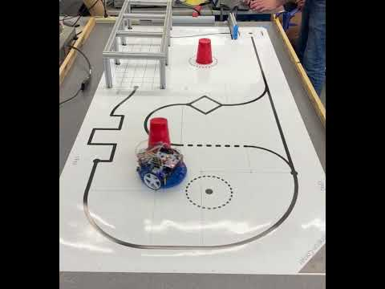
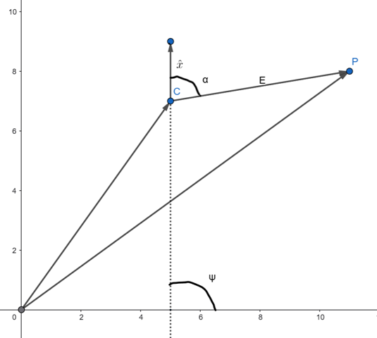
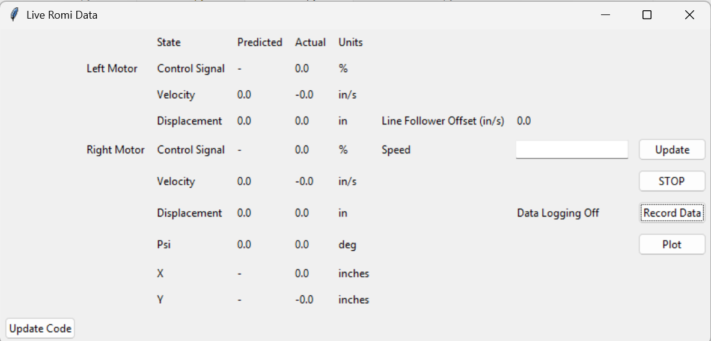
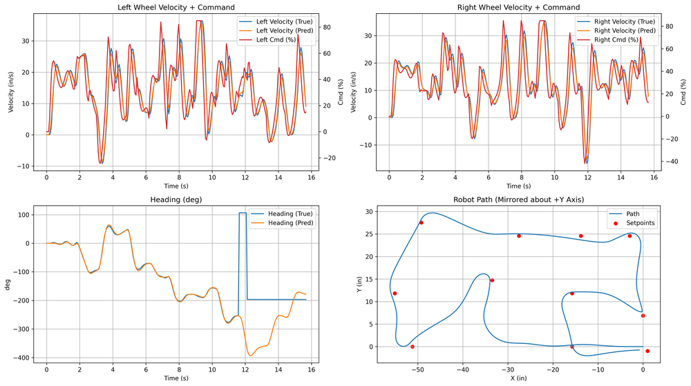
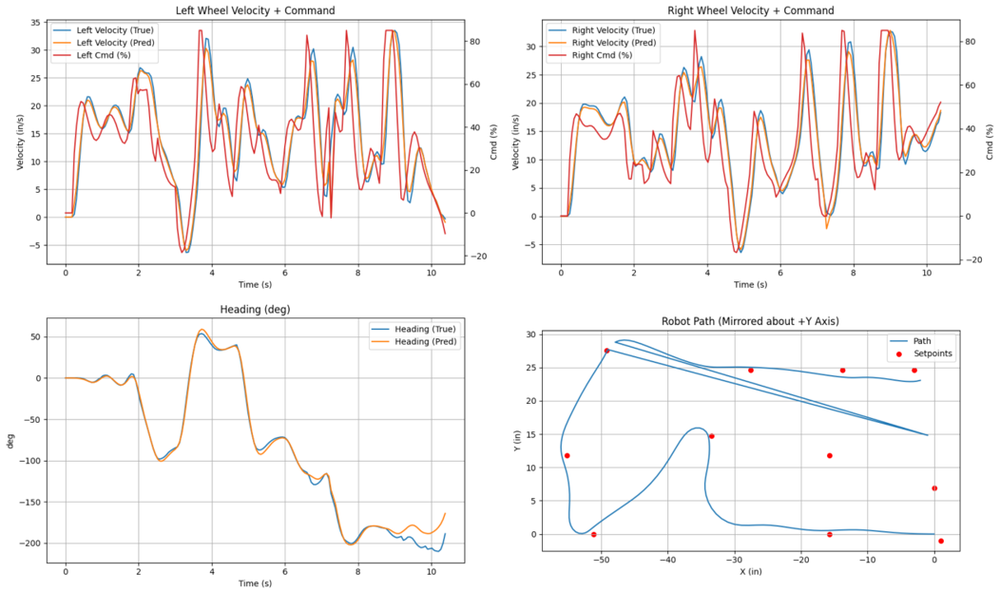
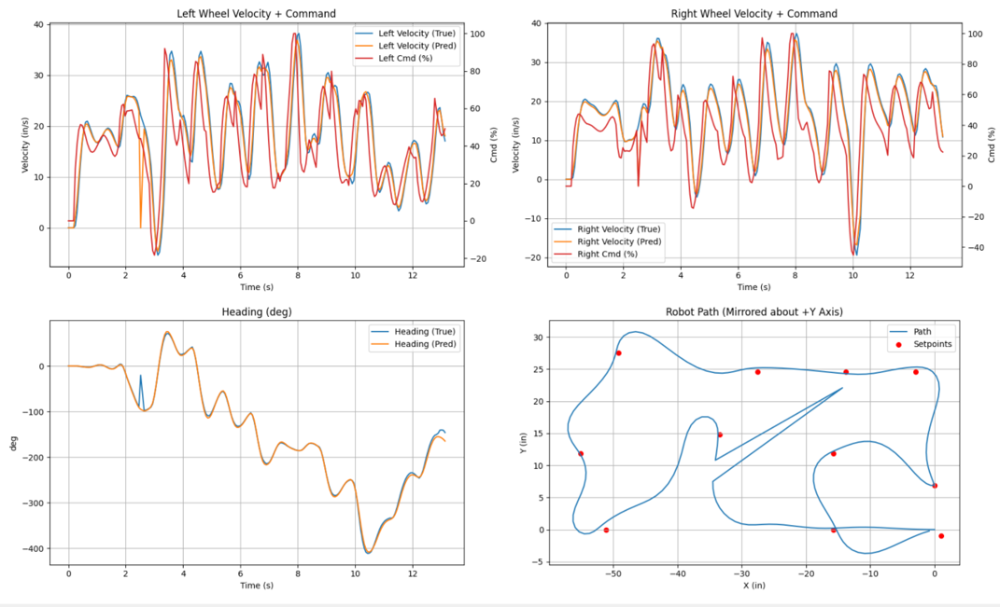
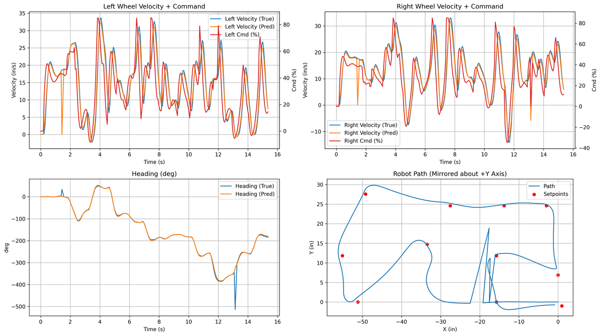
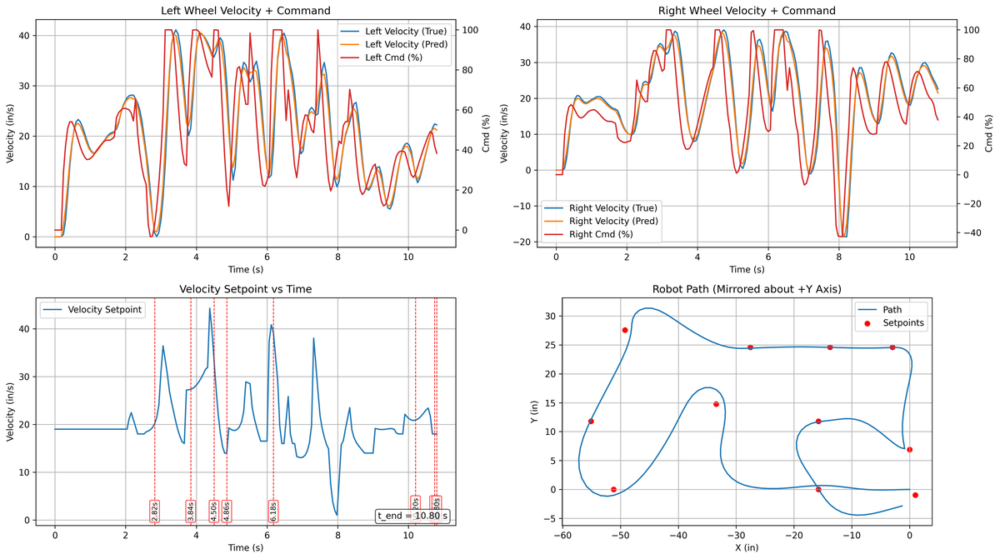

Autonomous Mobile Robot
A Pololu Romi robot that drives an obstacle course on its own — line-following, hitting checkpoints, and dodging a wall — as fast as possible. I built it solo around an observer-based state estimator and a custom heading-and-speed control law, then tuned it from ~30 s down to ~11 s: the fastest of twelve teams.
- Role
- Solo — firmware, estimation, control, tooling
- Focus
- State estimation · Real-time control · Telemetry
- Stack
- MicroPython · STM32L476 · IMU · Bluetooth


The problem
The ME 405 term project puts a low-cost Pololu Romi (STM32L476 Nucleo, MicroPython) through an obstacle course: follow a line to a junction, then drive a sequence of checkpoints while avoiding obstacles and a wall. The single metric that matters is completion time — so the whole design question is how to know where the robot is, accurately and cheaply, and drive it hard without losing control.
My approach & the decisions
State estimation
The core is an observer-based state estimator — a seven-state model (wheel velocities, heading, wheel positions, and X/Y) built on a first-order motor model. I ran it in scalar form with RK4 integration rather than matrix operations, specifically to fit the STM32's small RAM and hold the real-time budget. Because the model takes motor voltage as an input, I chose LiPo AA cells with built-in regulators for a stable supply — a hardware choice made to serve the estimator.
Control law
I wrote a custom heading-and-speed control law instead of using textbook Pure Pursuit (and wrote up the tradeoffs). Heading error comes from the dot and cross products between the heading vector and the vector to the target; the robot slows for large heading errors and as it nears a waypoint, so it doesn't overshoot.

Real-time firmware & tooling
- Tightened the hot path with
@micropython.nativemethods, pre-allocated buffers passed through the task share, and a dedicated garbage-collector task run once per loop. - Built a full PC-side telemetry toolchain over Bluetooth — a custom binary packet, a live Tkinter dashboard, CSV export, and an auto-plotting engine for run analysis.

What I changed, and why
- Constant speed didn't work. At a fixed speed the robot overshot waypoints and backtracked, especially on tight turns. I added speed modulation by heading accuracy and distance-to-target — the biggest single time saver.
- The IMU lied near the wall. Close to the metal wall the magnetometer gave nonsense headings, and with the observer's aggressive gains the estimate blew up. I disabled IMU feedback in that zone (heading from wheel velocity alone), then re-enabled it once the BNO055's self-calibration settled across runs.
- Bluetooth corruption showed up as spikes. Dropped/garbled packets put spikes in the plots, so I added a median-absolute-deviation outlier filter in the analysis engine.
- Loop timing. Trial and error put the smallest reliable task period at 25 ms; I raised it to 30 ms for the final demo so unoptimized code wouldn't jitter the timestep.


Results
Iterative tuning against real run data pulled course time from roughly 30 seconds to about 11 seconds — the fastest of the twelve teams. The estimator's predicted velocities and heading track the measured signals closely, which is what made driving that aggressively survivable.
| Metric | Value | Notes |
|---|---|---|
| Course completion time | ~30 s → ~11 s | fastest of 12 teams |
| Control loop period | 25 ms → 30 ms | min reliable → final demo |
| Observer | 7 states · 5 meas · 2 in | RK4, scalar form |
| Telemetry link | 460800 baud | 19-field binary packet |



What I'd build next
- System-ID the motor model. Its parameters came from theory plus basic testing; a proper identification would sharpen the estimator and let me push gains further with less risk.
- Simplify the control law. The final law works but grew complex under time pressure — I'd re-derive a cleaner version now that I know which terms actually earn their keep.
- Fuse the IMU properly near the wall instead of switching it off — a confidence-weighted update would keep the heading correction where it's trustworthy.